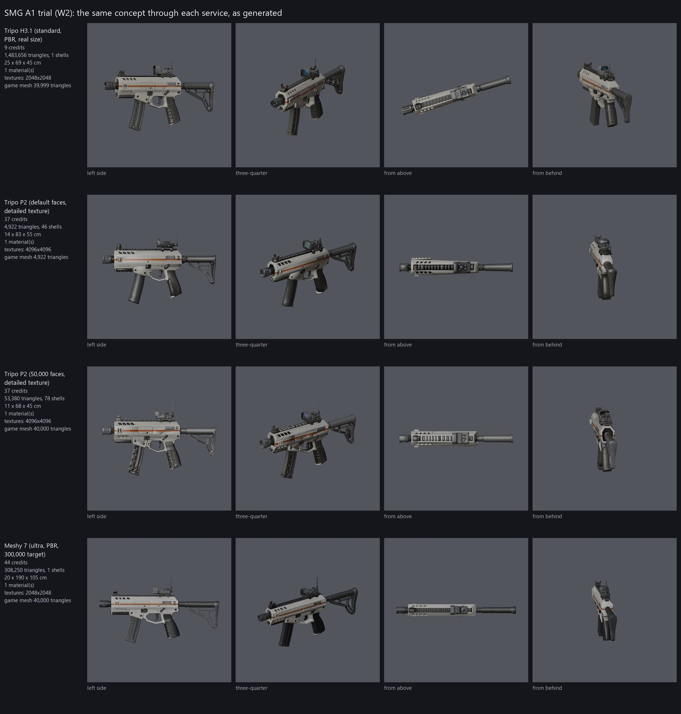
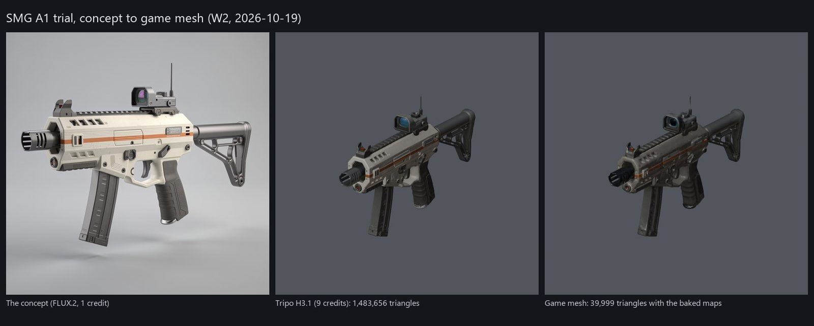
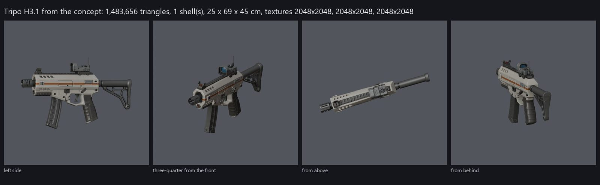
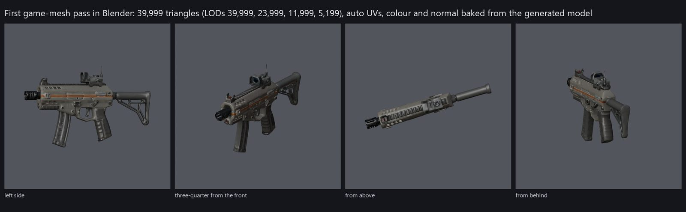
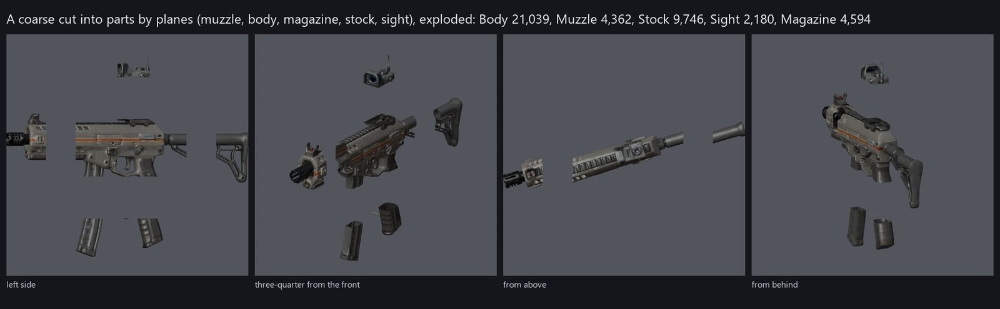
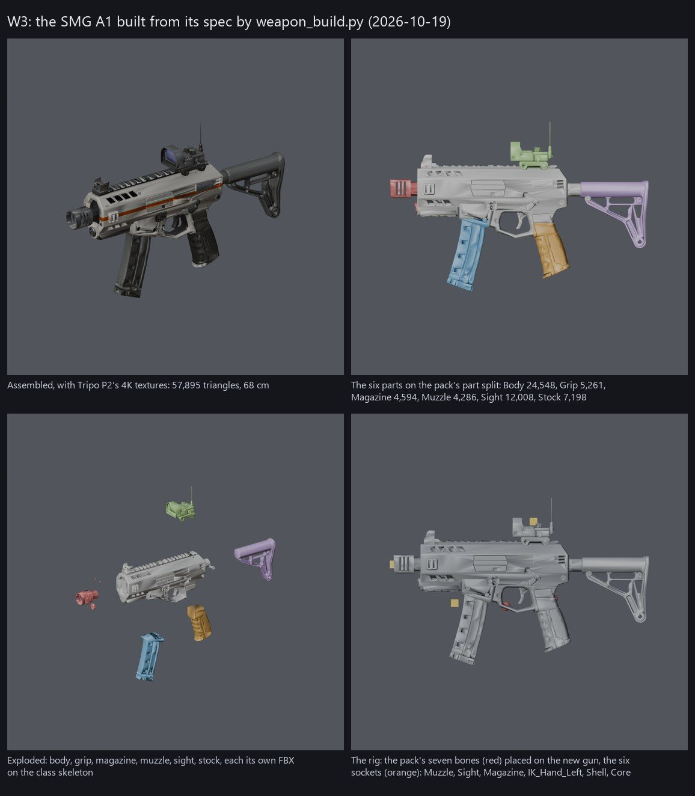
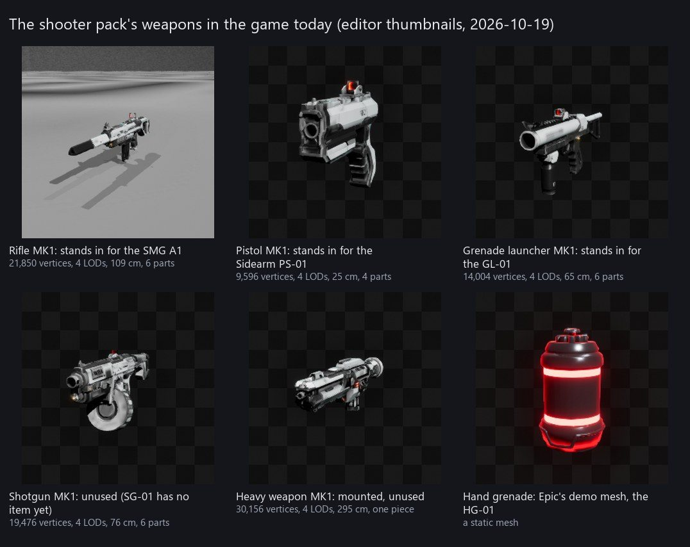
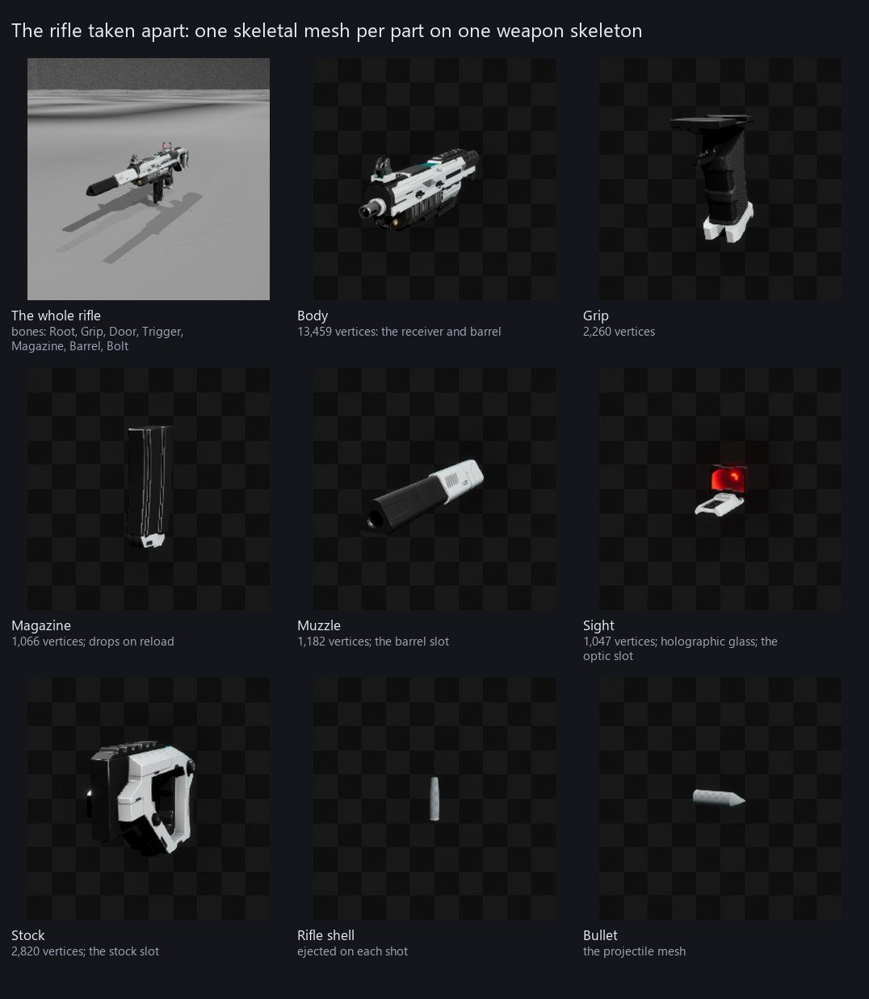
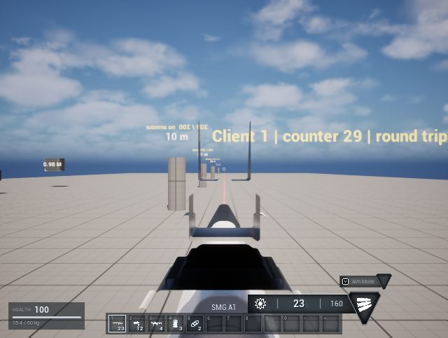

Combat and arsenal
Precise third-person shooting that the server checks: damage, armour, the weapons and how you move.
Doing This tab is the arsenal's workshop (the Weapons and Tools chat, D-32): the shooter
pack's weapons taken apart, what Tharrn's own weapons, tools and attachments have to be, which AI and tools make them,
and the steps, with pictures as each lands. The full plan is the design record's docs/weapons.md.
Next, and what the owner decides
Next W3 is done (2026-10-19): the SMG A1 rebuilds from its spec with no hand steps, six parts on the pack's rifle skeleton with sockets, an FBX per part and the check passing. Next, W4, prepared and waiting on the owner's go: the import tool, the Blueprint hookup and the C++ that puts a model's parts on the weapon are written (2026-10-20, section 12 of the page), unrun; the C++ compiled clean on 2026-10-20; the run (the background import, the Blueprint build, the MSS test, pictures) takes the next editor slot after the owner's tests, on the owner's go. The commit of this chat's files (the page, the W3 and W4 tools, the SMG A1's built files) waits on the owner's go too.
Open question The questions this chat waits on. Each carries a recommendation; "as proposed" is an answer.
| ID | The question | Recommendation |
|---|---|---|
OQ-34 | The starting weapons' numbers (P3, D-38), judged on the test range (test 1 on the Report tab): the SMG A1 (16 damage, 900 rounds a minute, 40 rounds, 1.8 s reload) and the Sidearm PS-01 (34 damage, 300 a minute semi-automatic, 12 rounds, 1.4 s) in Data/Weapons.csv | Proposal (2026-10-20, the Weapons chat): keep them as the Issue tier's and make the Wreck-tier start weaker through the tier's multipliers (weapons.md) rather than new rows |
OQ-35 | The launcher's and the grenade's numbers (D-24; test 2): the GL-01 round (120 damage, 50 m/s, 4 rounds, 3 s reload, full damage within 1 m, none past 5 m) and the Frag Grenade HG-01 (150 damage, 15 m/s throw, 3 s fuse, 3 carried) | Proposal: keep; if the blast feels small, 1.5 m full and 6 m none for both, not more damage |
OQ-36 | The view through the sight (D-24; test 3): the camera behind the sight part on all three weapons (the SMG's eye tuned to the pack's open sight, 12 cm behind the sight for the others; Tharrn's models put the eye on their Sight socket) | Proposal: keep it for iron and holographic sights; scopes (W6) get a true scope view with their zoom |
OQ-37 | When the pistol and the launcher move to Tharrn's own models (W5): straight after W4, or after the owner has played the SMG A1 for a while | Proposal: straight after W4 if the SMG looks right in the owner's hands, so wave 1 lands together |
OQ-38 | The SMG A1's look from the W2 trial (Tripo P2 at 50,000 faces; the Combat tab's pictures) as the Issue-tier base model | Proposal: good enough to build the game's first own weapon on; the Wreck variant (W5) gets its own concept pass; a new SMG concept only if the owner wants another silhouette |
Decided for this tab
| ID | Decision | Date |
|---|---|---|
D-22 | Weapons, clothing and armour are made for Tharrn | 2026-10-16 |
D-23 | Weapons combine the Multiplayer Shooter System (MSS 2.0) with Tharrn's C++. | 2026-10-16 |
D-24 | Weapon play after P3's first build. | 2026-10-16 |
D-32 | Tharrn's own weapons, tools and attachments are made in the Weapons and Tools chat, from the shooter pack's construction. | 2026-10-19 |
D-35 | Higgsfield Plus is the generation account for Tharrn's art. | 2026-10-19 |
D-37 | Weapons follow the progression and the story: players start with weak, low-end weapons, mods make them better, and the advanced tiers are better; each weapon's look and style comes from the story. | 2026-10-19 |
D-38 | The arsenal's five story tiers, their looks, numbers and order, and the starting kit, as proposed. | 2026-10-19 |
D-39 | The hand tools: hatchet, pickaxe, knife, field scanner and build tool, as weapon rows with a melee hit type | 2026-10-19 |
D-40 | Tripo P2 at 50,000 faces is the main image-to-3D route for the arsenal, through Higgsfield (D-35); Tripo H3.1 for cheap first looks and high-poly sources; Meshy not used; Lychee optional. | 2026-10-19 |
D-42 | Tharrn is a PC game played mainly with keyboard and mouse; a game controller is an extra. | 2026-10-20 |
Tests for the owner
Sent to the Report tab on 2026-10-20 for the owner's test round; the questions above are what they decide.
- The weapons as they are (the pack's models on Tharrn's shots): open
Content/Tharrn/Maps/L_TestRange, Play (Listen Server with 2 players shows both machines; 1 is enough for the feel). The sign at the range lists the controls: hotbar 1 the SMG A1, 2 the Sidearm PS-01, 3 the Grenade Launcher GL-01, 4 the Frag Grenade; left mouse fires, right mouse aims, R reloads, the mouse wheel steps through the hotbar. Shoot the range's targets with each. About 5 minutes. - The launcher and the grenades: with 3, fire at the ground 10 to 30 m away (an arc at 50 m/s, explodes where it lands, full damage within 1 m, none past 5 m, 4 rounds then a 3 s reload). With 4: hold right mouse to aim, hold left mouse to pull the pin, let go to throw (15 m/s, 3 s fuse, the same blast); three are carried, a fourth 4 does nothing. Watch a blast against a wall (walls shield). About 3 minutes.
- The sight on each weapon: hold right mouse with 1, 2 and 3 and judge where the eye sits. About 1 minute.
Not in the editor yet: Tharrn's own SMG A1 (W3, the pictures below). It reaches the game with W4's run, then test 1 again with the new model.
Pictures


















Steps
| Step | What | State |
|---|---|---|
| W0 | The pack's weapons taken apart and pictured; the model contract, the AI and tools, the arsenal, the tools and the steps proposed (this page); the wiki's Combat and arsenal tab | In the build 2026-10-19 |
| W1 | The owner's choices: the look and order (OQ-20), the tools (OQ-21), the generation service and plan (OQ-22) | In the build 2026-10-19: D-38 to D-40 |
| W2 | Trial on one weapon (the SMG A1): a concept sheet, then the same sheet through Tripo H3.1, Tripo P2, Meshy 7 (Higgsfield) and Lychee Studio; each result split, retopologised and baked in Blender; compared on parts, topology, texture and time | In the build 2026-10-19: Higgsfield's three services compared (section 10); Tripo P2 at 50,000 faces chosen (D-40) |
| W3 | The Blender tool: Tools/Weapons/Blender/weapon_build.py turns a high-poly into parts on the class skeleton with sockets, LODs, bakes and an FBX per part, from a small JSON spec per weapon | In the build 2026-10-19: the SMG A1 rebuilds from its spec with no hand steps and the check passes (section 11) |
| W4 | The import tool: Tools/Weapons/import_weapon.py imports the FBX parts under /Game/Art/Weapons/<id>/ (WP_ meshes, T_ textures, the owner's conventions), makes the material instances, LOD settings and physics assets, and the Tharrn weapon Blueprint child that uses them | Designed prepared 2026-10-20 (section 12), unrun; runs on the owner's go in the first editor slot after the Map chat's window, through the Master chat |
| W5 | Wave 1 in the game: SMG A1, Sidearm PS-01, Grenade Launcher GL-01 and its round, Frag Grenade HG-01; the view through each sight from its Sight socket; pictures in the game | Designed |
| W6 | Attachments: Data/Attachments.csv (deliverable 7), part files for the eleven, the swap on the server with the stats rebuilt (D-04), scopes with their zoom, the weapon mod screen with the UI chat | Designed |
| W7 | Wave 2 and 3: AR-01, SG-01 (pellets decided), MR-01, EB-01 with the beam fire mode in C++ | Designed |
| W8 | Tools: hatchet, pickaxe, knife, scanner, build tool models and the melee hit type; the swing animation; wired to harvesting (map chat) and building (building chat) | Designed |
| W9 | Icons in the interface's style and Tharrn's own weapon sounds | Designed |
W4: what runs on the owner's go
Designed Prepared 2026-10-20 off the editor, unrun; the C++ compiled clean the same afternoon in the Building chat's editor build. The run, in order: the background import with its log; the Blueprint build in the open editor; the MSS test with two machines (draw, fire, reload, aim, wheel, launcher, grenades); pictures of the SMG A1 in the hand and through its sight. W4 is done when the import has no warnings and the test passes. The run also has to tell: whether Unreal makes the six sockets from the FBX (else they are placed from the rig's report, approximately), whether the skeleton's retargeting can be set from Python (else the magazine is watched for a jump on reload), the LOD counts, and from the pictures whether the normal map's flip is right.
| Piece | Where | What it does |
|---|---|---|
| The import tool | Tools/Weapons/import_weapon.py (game repo), a background-editor script like the export | Textures T_<id>_diff, _norm (a glTF normal map, green flipped), _orm (packed occlusion, roughness, metal) into /Game/Art/Weapons/<id>/; the master material M_TharrnWeapon (colour times a Tint, normal, the packed map, a GlowColor in the Neural token times a Glow strength for the tiers' crystal light) under /Game/Art/Weapons/Materials/, made once; MI_<id> on it; the six parts and the whole gun as skeletal meshes WP_<id>_<Part> on the pack's class skeleton, with the pack's LOD settings (the modular ones for Body, Muzzle and Stock, the small ones for Grip, Magazine and Sight, as the pack's own parts), a physics asset each, the sockets on Body. Checks: on the class skeleton with no skeleton of its own, the rig's bones, the six sockets, one material slot, the length within 5 percent of the spec, the muzzle ahead of the stock along +Y, LODs. Writes a report; RESULT ok or failed. |
| The pack skeleton's retargeting | The same script (TH_RETARGET_RELATIVE=0 leaves it) | Every bone but the root of the class skeleton to AnimationRelative translation: the pack's reload moves the new magazine from where it sits on the new gun instead of jumping to where the pack's magazine was; the pack's own meshes play as before. Pack content, so it runs again after a restage, like setup_mss.py |
| The Blueprint hookup | Tools/Weapons/build_mss_weapons.py (MODELS, model_parts) | Where the parts exist, the SMG's look component gets a Parts list: the mesh for each of MSS's part components (Body, Grip, Magazine, Muzzle, Sight, Stock, read from the pack's rifle Blueprint); EyeDistanceCm 12 for the new sight. Before the import ran, the pack's parts stay and the script says so |
| The C++ | Source/Tharrn/Combat/TharrnWeaponLook.h/.cpp | FTharrnWeaponPart and Parts on the look component; ApplyParts at BeginPlay (before the weapon's own, so MSS finds the new parts in place) sets each component's mesh and drops the pack's material overrides; the eye for aiming (D-24) comes from the body part's Sight socket when there is one, else the pack's sight-part middle as before. Compiled clean in the Building chat's editor build on 2026-10-20 (29 s, no new warnings) |
The shooter pack's weapons, taken apart
In the build Measured in the editor on 2026-10-19. Each gun is modular: one skeletal mesh per part on one weapon skeleton per class, whose bones MSS's reload and fire animations move. The pack's muzzle, stock, magazine and sight parts are already the barrel, stock, magazine and optic slots of the attachment system; Tharrn's own models keep that construction and add sockets, a core slot, scopes and tools.
| Weapon | Stands in for | Vertices, LOD0 to LOD3 | Parts (vertices) | Bones | Size |
|---|---|---|---|---|---|
Rifle (SKM_LW_Rifle_Bullet_MK1) | SMG A1 | 21,850 → 13,270 → 6,630 → 2,946 | Body 13,459; Grip 2,260; Magazine 1,066; Muzzle 1,182; Sight 1,047; Stock 2,820 | Root, Grip, Door, Trigger, Magazine, Barrel, Bolt | 109 × 30 × 8 cm |
Pistol (SKM_LW_Pistol_Bullet_MK1) | Sidearm PS-01 | 9,596 → 5,833 → 3,476 → 1,677 | Body 4,853; Grip 3,734; Magazine 141; Sight 868 | Root, Grip, Slide, Door, Trigger, Magazine, Barrel | 25 × 21 × 4 cm |
Grenade launcher (SKM_GL_Impact_MK1) | Grenade Launcher GL-01 | 14,004 → 7,850 → 4,421 → 1,994 | Barrel 3,804; Body 3,922; Grenade 1,216; Grip 927; Sight 2,428; Stock 1,707 | Root, Grip, Trigger, Barrel, Magazine | 65 × 27 × 6 cm |
Shotgun (SKM_LW_Shotgun_Bullet_MK1) | nothing yet (SG-01 has no item) | 19,476 → 11,581 → 6,441 → 2,944 | Body 4,966; Grip 2,257; Magazine 1,266; Muzzle 7,788; Sight 953; Stock 2,246 | Root, Grip, Bolt, Trigger, Magazine, Barrel, Door | 76 × 34 × 19 cm |
Heavy weapon (SKM_HW_Bullet_MK1) | nothing (for turrets and vehicles) | 30,156 → 15,118 → 8,113 → 3,745 | one piece | Root, Grip, Door, Trigger, Magazine, Barrel, Bolt | 295 × 89 × 42 cm |
Hand grenade (EpicGames_Demo/Meshes/Grenade/SM_Grenade) | Frag Grenade HG-01 | a static mesh | — | — | — |
What a Tharrn weapon model has to be
Designed Parts as separate meshes on the pack's weapon skeleton for the class (so its animations play
unchanged); body, grip, magazine, muzzle, sight, stock and a core; sockets for the muzzle, the sight's eye, the magazine,
the front hand, the shell and the core; real-world size with the root at the grip; about 40,000 to 80,000 triangles with
its parts and 4 LODs; one 4K texture set for the body and 2K per part on a master material with colour layers, so
rarity and tiers tint a gun without new textures. Proposal, in docs/weapons.md section 3.
Which AI and tools
| Job | Tool | Connected now? | Cost |
|---|---|---|---|
| Concept sheets per weapon (three-quarter view, strict side and top views, the parts laid out) and inventory icons | Higgsfield's image models through its MCP (this chat); or Lychee Studio's text-to-image step | Yes: Higgsfield Plus since 2026-10-19 (D-35; 1,200 credits on activation, 1,082 after the trial) | 0.25 to 1.25 credits an image |
| Image to a high-detail 3D model | Higgsfield's 3D models: Tripo H3.1 (one image or 2 to 4 views; PBR), Tripo P2 (FBX or GLB, quad mesh, up to 50,000 faces, "extreme" texture quality), Meshy 7 (PBR, low-poly mode), Hunyuan3D v3.1 Pro, SAM 3 3D; Meshy remesh and retexture | Yes, through the MCP | 5 to 25 credits a model (Higgsfield's prices on 2026-10-19: Tripo 5, Hunyuan3D 3.1 Pro 16, Meshy with PBR 25) |
| The same, in the owner's Lychee Studio project | Lychee Studio: a node workspace from text to image to 3D ("Image to 3D", "Multiview", "Texture Model", "Props Extraction", "Game Export (FBX/glTF)"); its page says props can be textured, rigged and exported to GLB and FBX | The owner's account, in the browser; no MCP or CLI found | Per seat and credits: Starter 20 €/seat/month (its page, 2026-10-19) |
| Retopology to the budget, UVs, baking the high-poly's detail, splitting into parts, rigging to MSS's weapon skeleton, sockets, LODs, FBX export | Blender 4.1 (installed under Program Files), scripted by Claude and run headless (blender.exe --background --python) | Yes | Free |
| Import, materials, LOD settings, physics asset, the weapon Blueprint child, the data row, pictures in the game | Unreal MCP (SkeletalMeshTools.import_file, materials, Blueprints) and Tools/Weapons/ scripts | Yes | Free |
| Sounds of Tharrn's own | MSS's for now; later the game-audio-workflow skill | — | Later |
Decided after the one-weapon trial (W2): Higgsfield Plus is the generation account (D-35) and Tripo P2 at 50,000 faces the main route, with Tripo H3.1 for first looks (D-40). Generated meshes are the high-poly source; the game mesh is made from them in Blender by the W3 tool, which is what keeps the parts and attachments working.
The arsenal: tiers, mods and the story
Decided, D-38 The owner's direction (D-37): players start with weak, low-end weapons, mods make them better, the advanced tiers are better, and every weapon's look comes from the story. Decided as proposed (D-38): one tier per loot tier, each made by someone in the story, with the attachments as the steps between tiers. Initiative electronics go dark for the pulse's few seconds; Remnant and Choir crystal does not.
| Tier | Maker in the story | Look | How you get it | Stats and slots |
|---|---|---|---|---|
| Common: Wreck | Initiative issue pulled from Lantern's crashed landers | Scorched off-white polymer, tape and wire, a missing stock or sight (iron sights only), bare alloy where the paint burned, the orange stripe a trace | The starting kit and the coast's drops (Act I) | Damage × 0.85, handling × 0.9; two of the five mod slots work, the rest are damaged |
| Uncommon: Issue | The Initiative's fabricator at the Coastal Outpost prints the convoy's standard pattern clean | The clean colony print: matte off-white polymer, a dark alloy receiver, the Exodus orange stripe, stencilled serials (the trial's SMG, section 10) | Crafted at a fabricator from alloy and mineral, no blueprint; the forest's drops (Act II) | Damage × 1.0; all five slots |
| Rare: Contract | The Consortium's security contractors: machined, heavier, corporate | Gunmetal and matte black, machined edges, yellow-and-black hazard trim, serial plates | A blueprint from Rare sources (the Hollow, the Research Hub, dungeon chests, Trusted rank), built at the assembly bench; Consortium vendors | Damage × 1.15, recoil × 0.9; one mod built in |
| Advanced: Remnant | Meridian's survivors, eleven years adapting Initiative guns with Lattice crystal | A weathered Issue base with station brass and copper conduits, crystal grafts glowing in the Lattice's light (the Neural colour) | A blueprint from Advanced sources (the Crystal Expanse, the Contested Ruins, the plateau, the Echo Caverns, dungeon bosses, Sworn rank); needs biotech cores and energy crystals | Damage × 1.3; works through a pulse (below) |
| Alien: Choir | Grown from the Lattice's own crystal: Alien Synthesis, raid and world bosses, Legend rank, the archipelago | Dark crystal and alloy with no visible mechanism, glowing seams (the Neural colour) that sing the Choir's tones; the energy weapons' home | A blueprint and an alien core | Damage × 1.5; the core slot takes Alien cores; works through a pulse |
One base model a weapon, at the Issue tier; the other tiers are part swaps and material layers on it, the way the building tiers work on the same shapes. First the Prototype's guns at Issue plus Wreck, so the placeholders go and the game starts weak; then the mods, the rifle and the shotgun; then the higher tiers with the story's acts.
| ID | Weapon | Story home | Tiers | Wave | Note |
|---|---|---|---|---|---|
| SMG_A1 | SMG A1 | Initiative issue; the default starter | Wreck to Choir | 1 | The trial's model is its Issue tier |
| PS01 | Sidearm PS-01 | Initiative issue | Wreck to Advanced | 1 | |
| GL01 | Grenade Launcher GL-01 | Initiative; the squad's cache (the Soldier's intro quest) | Issue to Advanced | 1 | Not in the starting kit (OQ-28) |
| HG01 | Frag Grenade HG-01 | Initiative | Common | 1 | Crafted; no tiers |
| AR01 | Assault Rifle AR-01 | Initiative issue; the Soldier's starter | Wreck to Choir | 2 | No item yet |
| SG01 | Shotgun SG-01 | The Free Camps' scavenger gun in the Flats look (story.md §13): rust, cast stone, pipe, plate, tape, hand-painted white marks; traded at the Flats | Common to Rare | 2 | Pellets still proposed (deliverable 7) |
| MR01 | Mass Driver MR-01 | The Consortium's contract long gun | Rare to Alien | 3 | Out of the heavy slot (D-24); the Contract tier's signature |
| EB01 | Arc Beam EB-01 | The Remnant's crystal hybrid; the Choir's version is the Alien energy weapon | Advanced to Alien | 3 | Needs the beam fire mode in C++ |
Tools
Decided, D-39 The hand tools of the survival loop (D-39): a tool is a weapon row with a melee
hit type, a short swing the server checks like a shot, so harvesting only listens for the hit. The build tool never
swings: drawing it starts build mode and putting it away ends it (agreed with the Building chat 2026-10-20; until it is
on the hotbar in W8, B starts build mode from the Building chat's own mapping).
| Tool | Use | Logic lives in | Model from this chat |
|---|---|---|---|
| Hatchet | Cutting trees; a weak melee weapon | Harvesting (map chat, M5) | Yes |
| Pickaxe | Mining rocks, ore and crystal | Harvesting (M5) | Yes |
| Knife | Harvesting plants and hides; the quietest melee weapon | Harvesting (M5), combat (P3) | Yes |
| Field scanner | Shows resource nodes and creatures' weak points nearby (proposal: what it does is open) | New, with the HUD (UI chat) | Yes |
| Build tool | Placing building pieces (the ghost preview) | Building (B4) | Yes |
How a shot works online
Designed Your game fires at once, so it feels instant: muzzle flash, recoil, tracer and a predicted hit marker. The server then checks the shot against where the targets were at the moment you fired, and only the server applies damage. Heavy rounds are real projectiles with drop and travel time, simulated on the server.
Explosions
The grenade launcher's rounds and hand grenades explode: full damage within 1 m, falling evenly to nothing at 5 m, reduced by armour. A wall between you and the blast shields you completely, and your own grenades hurt you too. Only the server decides who the blast reaches (D-24).
Damage
| Hit | Multiplier |
|---|---|
| Head | × 2.5 |
| Torso | × 1.0 |
| Limb | × 0.75 |
| Armour | Damage reduction |
|---|---|
| Cloth | 10 % |
| Composite | 30 % |
| Alloy | 50 % |
Weak points on creatures add their own multipliers, and each enemy has a stagger meter: fill it and the enemy staggers, which interrupts its attack.
Fire modes
| Mode | Weapons | How it hits |
|---|---|---|
| Hitscan | SMG, pistol, rifle | Instantly along the aim line |
| Projectile | Grenade launcher | A travelling round with gravity drop that explodes where it lands |
| Thrown | Hand grenades | Thrown where you aim; explodes 3 seconds after the pin is pulled |
| Beam or charge | Energy weapons | A continuous beam, or a shot you charge up |
Weapons
The weapons with data so far. Damage is per hit; fire rate is rounds per minute; damage per second is damage × fire rate ÷ 60, on the torso and before armour; weight is kg; range is metres.
| ID | Weapon | Type | Damage | Fire rate | Damage / s | Magazine | Weight | Range | Hit | Role |
|---|---|---|---|---|---|---|---|---|---|---|
AR01 | Assault Rifle AR-01 | Ballistic | 28 | 600 | 280 | 30 | 3.2 | 600 | hitscan | Balanced mid-range rifle |
SMG_A1 | SMG A1 | Ballistic | 16 | 900 | 240 | 40 | 2.1 | 200 | hitscan | High fire rate close quarters |
SG01 | Shotgun SG-01 | Spread | 120 | 70 | 140 | 8 | 4.5 | 30 | projectile | High burst close-range; pellets wait for the owner (deliverable 7) |
PS01 | Sidearm PS-01 | Ballistic | 34 | 300 | 170 | 12 | 1.1 | 60 | hitscan | Backup sidearm; deliverable 7 starting values |
MR01 | Mass Driver MR-01 | Heavy | 95 | 50 | 79 | 5 | 6.0 | 800 | projectile | Heavy projectile with drop; deliverable 7 starting values |
GL01 | Grenade Launcher GL-01 | Explosive | 120 | 40 | 80 | 4 | 5.5 | 300 | projectile | Heavy slot from 2026-10-16 (D-24): MSS's grenade launcher; explodes on impact; blast radii are MSS's; proposal values |
HG01 | Frag Grenade HG-01 | Throwable | 150 | — | — | 3 carried | 0.4 | — | thrown | Hand grenade with MSS's throw (D-24), readied from the hotbar (D-25); carried as items (Data/Items.csv, D-25); fuse is MSS's; throw speed 15 m/s (MSS's 8 m/s landed inside the blast); proposal values |
Open question The shotgun SG-01 is stored as a projectile with a speed of 0; the GDD proposes hitscan pellets. Still missing for the fire modes above: an energy weapon. The Mass Driver MR-01 stays in the data; the grenade launcher took its place in the heavy slot (D-24).
Accuracy and recoil
- Recoil is a curve per weapon: how far the sight kicks up and sideways over time, and how it recovers.
- Spread has three numbers per weapon: from the hip, aiming down sights, and a penalty for moving.
- Aiming looks through the weapon's sight, zoomed a little per weapon; the game stays third person otherwise (D-24). Scopes come with the optic attachments.
- Aim assist on controllers only: a gentle pull within 0.6° of a target, strength 0.15, both adjustable.
- Vitals change your aim: thirst and low neural stability add sway (see the survival rules under Building Assets).
Attachments
Five slots: barrel, stock, magazine, optic and core. Attachments change recoil, accuracy, handling and weight, come in rarities, and need blueprints. They come with Tharrn's own weapon models (D-22, D-24): step W6 above, as part files on the class skeletons.
Movement
SprintMantleJetpack burst (uses stamina)Grapple tether
Your armour changes how you move. Mantling comes first; the jetpack and the grapple come later. There is no slide (D-24).
The first milestone
An SMG, a pistol and one heavy projectile weapon from the data; recoil and spread you can read on the test range; the damage multipliers and armour covered by automated tests; two players at 100 ms of lag hitting what they aim at (under 2 % disagreement between them); stagger and one weak point on the first creature.